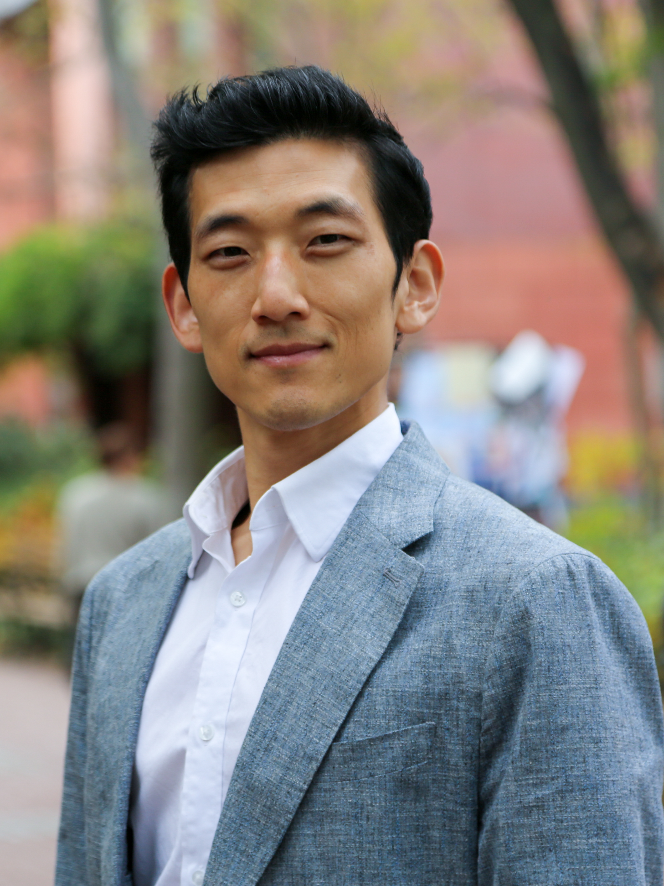
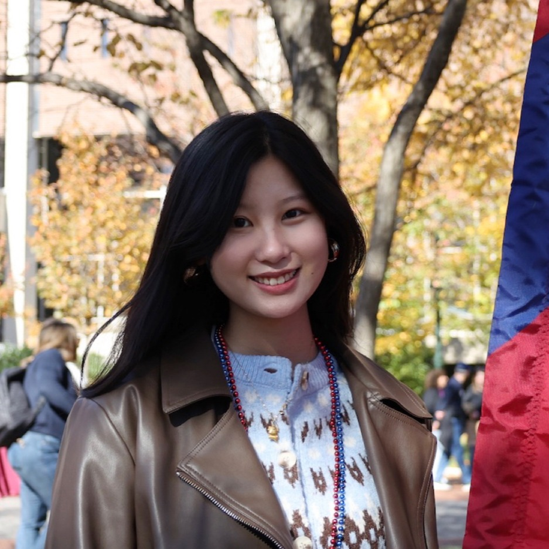

Meet the Lab
Faculty & Leadership

Jisung Park, PhD
Principal Investigator · SP2 · Wharton
▼
Patrick Behrer, PhD
Economist · World Bank
▼

Caro Park, PhD
Deputy Director · CCAR
▼

Paul Stainier, PhD
Postdoctoral Fellow · SP2
▼

Husel Husile
PhD Candidate · SP2
▼
Tingting Rui
PhD Candidate · Sociology · GSE
▼
Postdoctoral Fellows
Angelo dos Santos, PhD
Postdoctoral Fellow · Penn
▼
Yabo Vidogbena, PhD
Postdoctoral Fellow · Penn
▼
Yujie Zhang, PhD
Postdoctoral Fellow · Penn
▼
Student Fellows
Abishek Nippani
Doctoral Student · SP2
▼

Angel Bao
Graduate Student · SP2
▼
Anicca Liu
Fellow
▼
Chris Wodicka
PhD Candidate · SP2
▼

Ellery Spikes
Undergraduate Fellow
▼
Heather Do
PhD Student · Penn GSE
▼
Hwiyoung Lee
PhD Student · SP2
▼

Lindsay Park
Fellow
▼
Ljuben Atov
Undergraduate Fellow
▼

Mohamad Al-Abbas
PhD Candidate · Demography · Sociology
▼

Nazar Khalid
PhD Candidate · Sociology
▼
Rebecca Pepe
PhD Candidate · SP2
▼
Sebastian Prandoni
PhD Student · SP2
▼